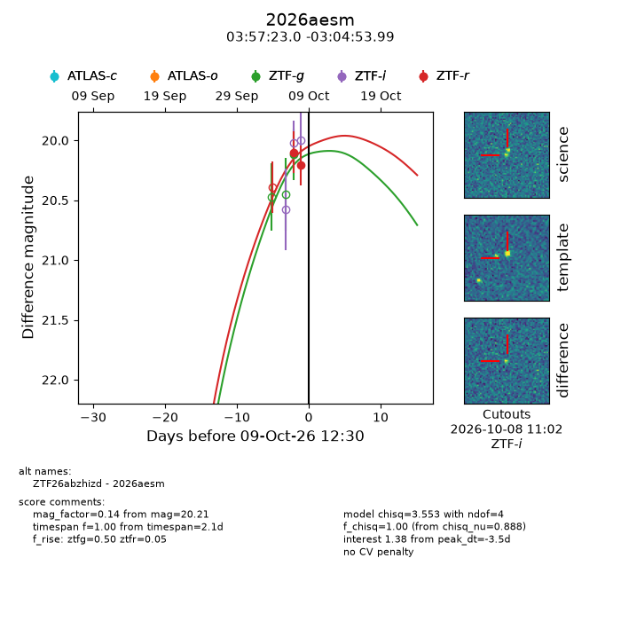
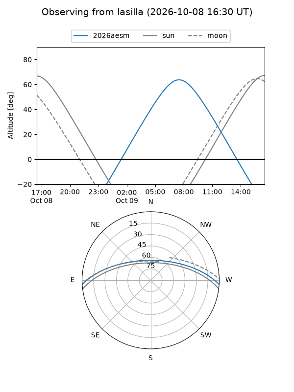
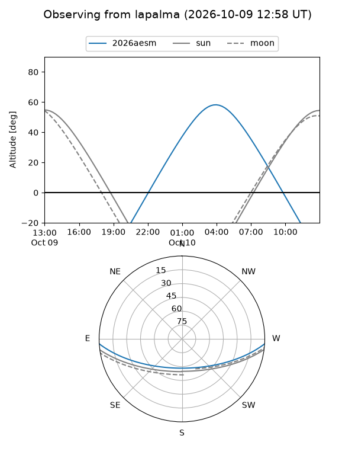
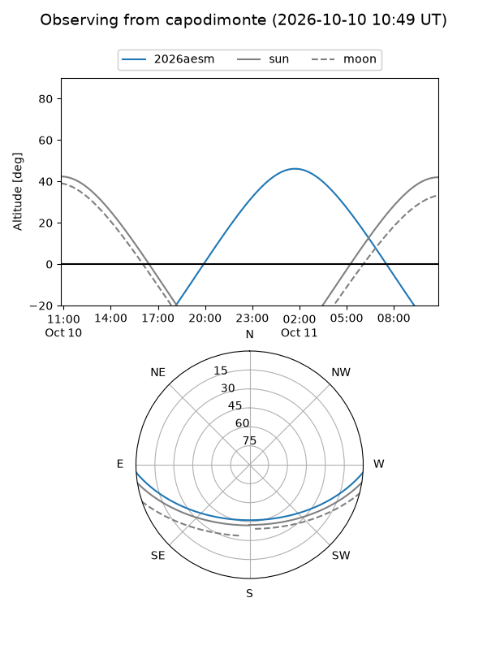
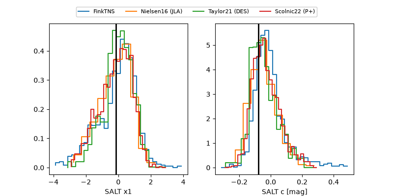

2026aesm
Target 2026aesm at 2026-10-09 12:32
Aliases and brokers:
FINK-ZTF: ztf.fink-portal.org/ZTF26abzhizd
Lasair-ZTF: lasair-ztf.lsst.ac.uk/objects/ZTF26abzhizd
ALeRCE-ZTF: alerce.online/object/ZTF26abzhizd
YSE-PZ: ziggy.ucolick.org/yse/transient_detail/2026aesm
TNS name: wis-tns.org/object/2026aesm
Direct TNS query: direct search
alt names
ZTF26abzhizd (ztf,fink_ztf)
2026aesm (tns,yse)
Coordinates:
equatorial (ra, dec) = 59.3458,-3.08167
equatorial (HMS+DMS) = 03:57:22.99,-03:04:53.99
galactic (l, b) = (192.7864,-39.52455)
Flags:
peak dt: -3.5
Photometry:
last ztfg=20.12, ztfr=20.21
1 ztfg, 2 ztfr detections
Lightcurve

Visibility



Additional plots
